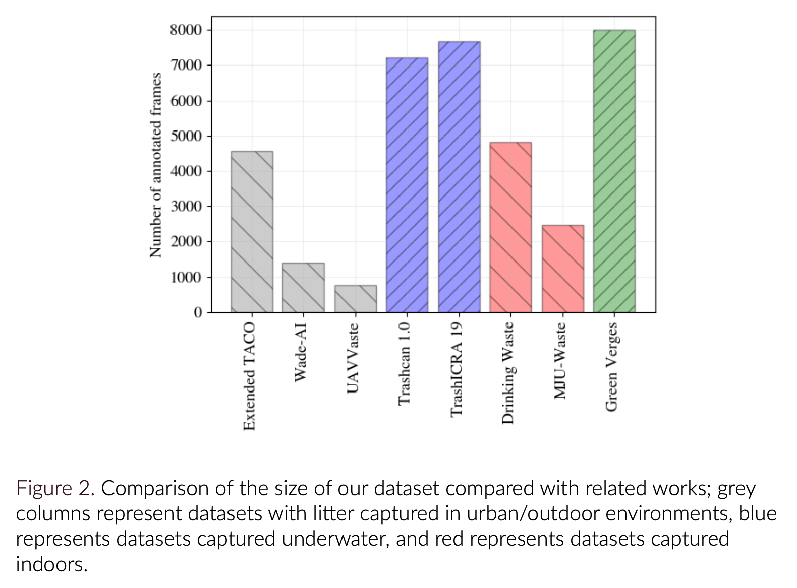

Dataset and Annotations
Footage Collection
To collect Dashcam video footage we used a WOLFBOX 4K GPS enabled dashcam. Dashcam footage was collected in Lincolnshire, and the surrounding areas, between February and April. In total, around 35 hours of driving footage was captured in a range of lighting and weather conditions. While the dashcam footage was captured at a resolution of 4K (3840 x 2160 px), it was found the downsampling the footage to 1K (960 x 540 px) allowed for much more efficient processing. Both the 4K and 2K downsampled footage are stored on our secure cloud storage.
Frame Annotation
After an extensive evaluation process, we opted for the CVAT open source annotation tool developed by Intel. We found the software to be efficient and versatile for our needs, including features like bounding box interpolation through a number of frames.
In total, our dataset collected so far consists of 8997 frames (constructed as a subset of the 35 hours of total footage captured). The size of our dataset is compared to other related work in Figure 2. With augmentation techniques, we increase the size of the training dataset to 15,065 frames and include domain specific inductive bias (e.g. vehicle motion blur), without the costly need of annotating further frames.

When annotating raw dashcam video, there may be many frames that do not contain annotations. In the case of the object detector, these empty frames are redundant as it will not learn much information from them with regards to classes and position.
CVAT outputs two things:CVATHelpers was created to filter frames and annotations.CVATHelpers has separate functions for filtering json and frames, and ‘reduceCVAT’ which accomplishes both at the same time. However, the solution only works on annotations in COCO format.
Dataset Access
We host our data on Microsoft Onedrive. Access to the data used in this project, including driving footage and object annotations, may be possible; please contact us using the email address provided at the bottom of this page to discuss. If access is granted, you can use the link below (along with the key provided) to access our data repository.